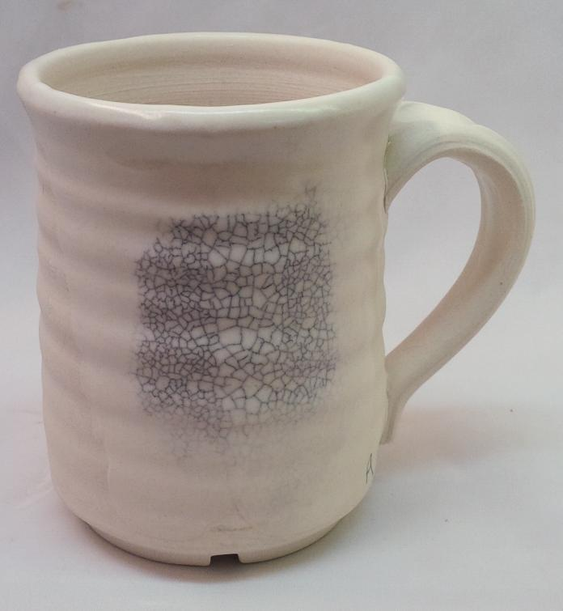
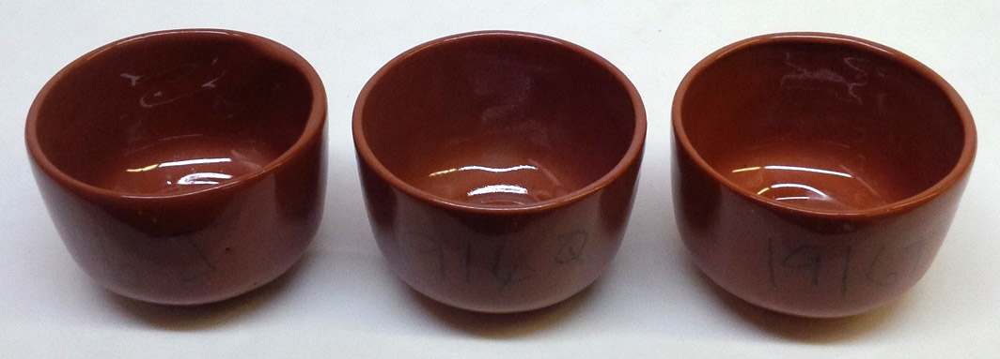
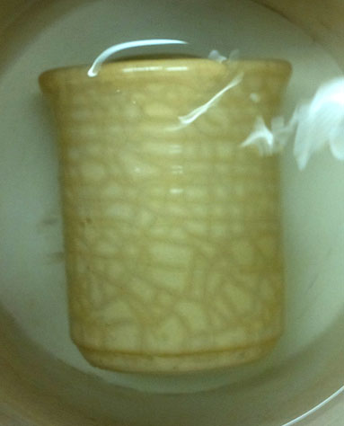
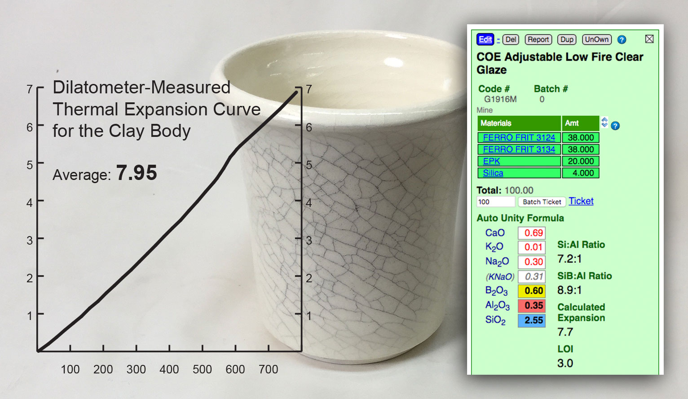

IWCT - 300F:Ice Water Crazing Test
Most people do not have a dilatometer so they must test the susceptibility of their glazes to crazing by simple observation. Such methods may actually have more value since it can be difficult to link numeric dilatometric results to what will happen in practice.
This procedure is an alternative to the BWIW test (Boiling Water:Ice Water) for crazing (but not shivering), it stresses the glaze-body fit more by heating the sample to 300F before plunging it into ice water. Here are some details:
-Do not subject the same specimen to successive shock cycles, use a different one each time.
-Tiles of 3/8" thickness will stress the fit more than 1/4".
-The more accurate the temperature of your oven the more repeatable the test will be.
-Heat the specimens vertically standing in the kiln. Make setters if needed. Hold the temperature for half an hour to make sure the heat penetrates.
-Make sure the ice water vessel is large enough and has lots of ice, the hot tiles can melt the ice faster than you think.
-Agitate the water vigorously and continually as samples are dropped in, this assures that all specimens are equally subjected to close-to-freezing-temperature water on all sides.
-Consider testing your clay-glaze at a cone above and below your production firing temperature.
Water expansion can be an important factor in crazing, for a truer test consider enhancing its penetration into body pores by multi-hours in an autoclave, subjecting it to more heat and pressure (5-6 bars). See the book "Glasuren und ihre Farben".
We adjusted this procedure in 2021. Previously it recommended doing separate tests at progressively higher temperatures until a crazing threshold was reached (and recording that temperature). In practice, we have found it more practical to simply test at this one temperature and judge a body-glaze combination as "pass" or "fail". We also added the step of waiting until the next day before doing the final assessment.
No crazing out of the kiln. But an ice-water test did this.

This picture has its own page with more detail, click here to see it.
The side of this white porcelain test mug is glazed with varying thicknesses of V.C. 71 (a popular silky matte used by potters), then fired to cone 6. Out of the kiln, there was no crazing, and it felt silky and wonderful. But after a 300F/icewater IWCT this happened (it was felt-pen marked and cleaned with acetone). The glaze was apparently elastic enough to handle the gradual cooling in the kiln. However, the recipe has 40% feldspar and low Al2O3 and SiO2, in a cone 6 glaze these are red flags for crazing.
No matter what anyone tells you, glaze fit can rarely be fixed by firing differently (that just delays it). If someone needs to cool their kiln slowly to prevent crazing it simply means the glaze does not fit - its needs to be adjusted to reduce its co-efficient of thermal expansion.
A Redart cone 03 body shines when it come to ease of glaze fit

This picture has its own page with more detail, click here to see it.
These bowls are fired at cone 03. They are made from 80 Redart, 20 Ball clay. The glazes are (left to right) G1916J (Frit 3195 85, EPK 15), G191Q (Frit 3195 65, Frit 3110 20, EPK 15) and G1916T (Frit 3195 65, Frit 3249 20, EPK 15). The latter is the most transparent and brilliant, even though that frit has high MgO. The center one has a higher expansion (because of the Frit 3110) and the right one a lower expansion (because of the Frit 3249). Yet all of them survived a 300F to icewater IWCT test without crazing. This is a testament to the utility of Redart at low temperatures. A white body done at the same time crazed the left two.
Turning delayed crazing into immediate crazing

This picture has its own page with more detail, click here to see it.
This is a cone 04 clay (Plainsman Buffstone) with a transparent glaze (G1916Q which is 65% Frit 3195, 20% Frit 3110, 15% EPK). On coming out of the kiln, the glaze looked fine, crystal clear, no crazing. However, when heated to 300F and then immersed into ice water this happens. This is the IWCT test. At lower temperatures, where bodies are porous, water immediately penetrates the cracks and begins to waterlog the body below. Fixing the problem was easy: Substitute the low expansion Frit 3249 for high expansion Frit 3110.
Match calculated COE to dilatometer-measured body COE? No!

This picture has its own page with more detail, click here to see it.
Why? Firing temperature, schedule and atmosphere affect the result. Dilatometers are only useful when manufacturers monitor bodies AND glazes over time and in the same firing conditions. Calculated values for glazes are only relative (not absolute). The best way to fit glazes to your clay bodies is by testing, evaluation, adjustment and retesting. For example, if a glaze crazes, adjust its recipe to bring the expansion down (your account at Insight-live has the tools and guides to do this). Then fire a glazed piece and thermal stress it (300F-to-ice-water IWCT test). If it still crazes, move it further. If you have a base glossy glaze that fits (and made of the same materials), try comparing its calculated expansion as a guide. Can you calculate body expansion from oxide chemistry? Definitely not, because bodies do not melt.
Variables
Temp - Temperature (V)
The temperature at which crazing appears. The higher the temperature the more craze resistant the glaze is.
Dist - Craze lines per inch (V)
Approximate. The higher the number the worse the problem.
Procedure
100. Apparatus
-An oven or kiln capable of heating ware accurately to 300F.
-Ice and ice water container (holding enough water so that an adequate thermal mass exists to maintain near freezing temperatures for all items being tested)
-Tongs or pliers.
200. Procedure
-Roll eight 3/8 inch thick specimens 2x3 inches in size (for each glaze to be tested). Dry them as flat as possible. Bisque fire them (to your standard production bisquing temperature).
-Make a mix of the glaze recipe, mix with water and gel to the standard production viscosity.
-Dip the first specimen of each recipe (leaving 1/2 inch at one end unglazed). Using a glaze thickness measuring device (or a pin tool and observation), compare the thicknesses. Dip specimen 2, adjusting dip-time as needed according to thickness assessment done on the first. Repeat the process to glaze the rest.
-Fire the specimens to the target production temperature (verify using cones).
-Heat the specimens to 300F and hold 30 minutes so heat thoroughly penetrates all samples.
-Prepare the ice water in a container big enough to hold all the specimens and with enough water and ice to have the needed thermal mass.
-Remove them from the oven (using dipping tongs) and quickly force them down into the cold water. Keep stirring the water vigorously as each new hot specimen is immersed.
-Continue to stir the water and add ice if needed to keep it cold. Allow it to stand for five minutes.
-Remove the specimens from the water and examine them closely.
-If needed, use a dye, ink or a black marker (followed by cleaning with an appropriate solvent) to highlight crack lines.
-Allow the specimens to sit until the next day, then reexamine them. If there is not crazing judge them as "passed".
For extra stressing, consider heating to 325 or 350F.
Related Information
Videos
Links
| Tests |
Co-efficient of Linear Expansion
In ceramics, glazes expand with increasing temperature. Being brittle materials, they must be expansion-compatible with the body they are on. |
| Tests |
Boiling Water:Ice Water Glaze Fit Test
Ceramic glazes that do not fit the body often do not craze until later. This test stresses the fit, thus revealing if it is likely to craze later. |
| Articles |
Understanding Thermal Expansion in Ceramic Glazes
Understanding thermal expansion is the key to dealing with crazing or shivering. There is a rich mans and poor mans way to fit glazes, the latter might be better. |
| Articles |
The Effect of Glaze Fit on Fired Ware Strength
The fit between body and glaze is like a marriage, if is is strong the marriage can survive problems. Likewise ceramic ware with well fitting glaze is much stronger than you think it might be, and vice versa. |
| Articles |
Crazing and Bacteria: Is There a Hazard?
A post to a discussion on the clayart group by Gavin Stairs regarding the food safety of crazed ware. |
| Articles |
Is Your Fired Ware Safe?
Glazed ware can be a safety hazard to end users because it may leach metals into food and drink, it could harbor bacteria and it could flake of in knife-edged pieces. |
| Articles |
Bringing Out the Big Guns in Craze Control: MgO (G1215U)
MgO is the secret weapon of craze control. If your application can tolerate it you can create a cone 6 glaze of very low thermal expansion that is very resistant to crazing. |
| Articles |
Formulating a Porcelain
The principles behind formulating a porcelain are quite simple. You just need to know the purpose of each material, a starting recipe and a testing regimen. |
| Glossary |
Co-efficient of Thermal Expansion
The co-efficient of thermal expansion of ceramic bodies and glazes determines how well they fit each other and their ability to survive sudden heating and cooling without cracking. |
| Glossary |
Glaze shivering
Shivering is a ceramic glaze defect that results in tiny flakes of glaze peeling off edges of ceramic ware. It happens because the thermal expansion of the body is too much higher than the glaze. |
| Glossary |
Glaze fit
In ceramics, glaze fit refers to the thermal expansion compatibility between glaze and clay body. When the fit is not good the glaze forms a crack pattern or flakes off on contours. |
| Glossary |
Thermal shock
When sudden changes in temperature cause dimensional changes ceramics often fail because of their brittle nature. Yet some ceramics are highly resistant. |
| Glossary |
Food Safe
Be skeptical of claims of food safety from potters who cannot explain or demonstrate why. Investigate the basis of manufacturer claims and labelling and the actual use to which their products are put. |
| Glossary |
Liner Glaze
Liner-glazing is a way to assure that your ware has a durable and leach resistant surface. It also signals to customers that you care about this. |
| Glossary |
Dinnerware Safe
In pottery, the terms dinnerware safe and food safe, are not the same. Perhaps the best way to understand the former is to consider what the opposite might be. |
| Typecodes |
Glaze Tests
Tests conducted on glaze batches used in production (as opposed to tests conducted on the materials used to make those glazes). |
| Troubles |
Glaze Crazing
Ask the right questions to analyse the real cause of glaze crazing. Do not just treat the symptoms, the real cause is thermal expansion mismatch with the body. |
 PayPal | No tracking, No ads, No paywall, No transient content! Just organized, concise information constantly updated and improved. Was this helpful? Consider supporting me. |
| By Tony Hansen Follow me on        |  |
Got a Question?
Buy me a coffee and we can talk 

https://digitalfire.com, All Rights Reserved
Privacy Policy